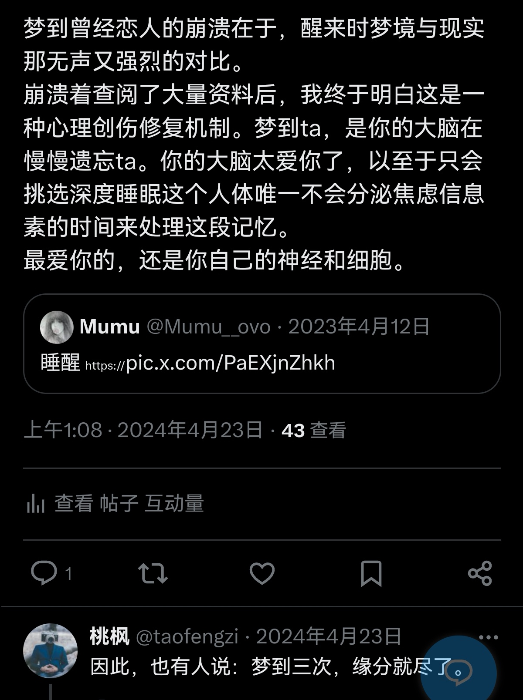
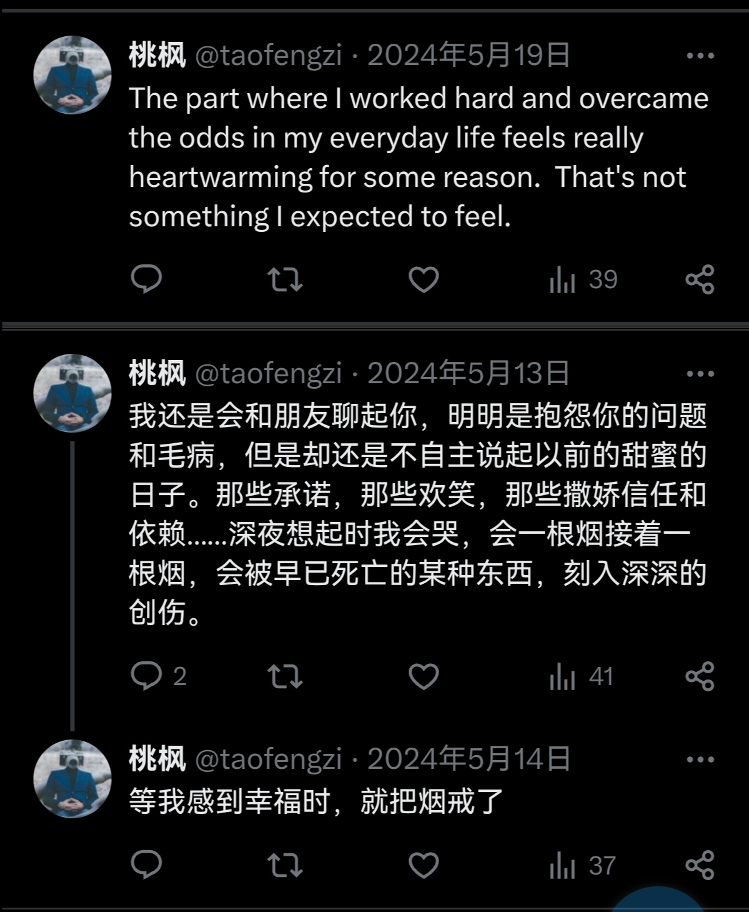

其实部分摘录博主不完全认同，但喜欢其所带来的有意思的新视角
# 骨气
“于人曰浩然，沛乎塞苍冥”。
看文天祥正气歌的时候，一边读一边哭，眼泪止不住的往下流，几次喘不上气来。
宰相旧友家人、曾经的南宋小皇帝，甚至忽必烈本人来招降，他全然拒绝；文丞相坐在小小的土室囚笼内，有充足的时间冷静热血，但他还是，宁死不从，南面而死。
年龄大了，看到这种事，没一点抵抗力。我读历史不多，但是每次看到这种故事也在思考 ——
你说南宋朝廷都没了，是什么支持着文丞相宁死不降？
同样的，你说楚大夫为何蹈江而去？
张巡又为何要死守睢阳？
苏武被匈奴俘虏，为何要持汉朝符节一十九年思归故国？
当时看祭侄文稿也是哭的稀里哗啦的，颜太守被叛军所困，父陷子死，为何他仍然要大骂安禄山直到舌头被钩断？
汉昭烈帝败走当阳，性命垂危，为何坚持要携民渡江？
蜀汉败局基本无力回天，诸葛武侯又为何要六出祁山？
马扩被金人权贵从牢狱中解救出来，为何毅然上太行山起兵抗金？
宗泽纨绔大半辈子，最后又为何苦守东京，临死三呼过河？
算及近代，死抗鞑清、病逝云南的李定国；几乎自杀式与日寇战斗的张自忠；还有 92 年，从北大楼上一跃而下的解万英，他们又是为何而死？
……
“道德三皇五帝，功名夏后商周”，我喜欢这首词。人们常说历史如滔滔江水，江水之下，总有一些事迹如浊浪泥沙中岿然的珍珠，璀璨温润，令人潸然泪下。
先辈的脊骨，永远是后辈手中最硬的武器。
# 死人的诗
不算完全恨你，
恨一个人原来挺累，
如果被你需要我估计也会放不下
不算完全爱你，
享受你落魄一团糟的模样，
如果能掐住你的脖子我应该会愉悦
算忘记了你，
连具体样子都记不清了，
也完全不想了解你的精神世界了
聊天时偶尔又会拿你举例，
自然而然的提到你
历历可数
一旦接触，就如同 galgame 的世界系剧情
被绑定在永不落幕的舞台剧上
你，嗯，算是我的一缕执念吧
想我的话，来敲门吧
已经死掉的人，没有意义的海水和呼吸
# 评论区
来源 b 站
你不断往下翻，
只为找到替你说出故事的人。
# 河殇
来源知乎
“单纯堆砌苦难是无病呻吟的小资行为，
真正有的现实主义美学是在客观有逻辑的描述苦难的同时保持悲天悯人的心。”
# 为什么很多男生恋爱体验不好？
来源知乎
你如果不性压抑，那你所以会接受一个女人往往是喜欢她人格思想，人的部分大于她身体，动物性的部分。因为如果你只是要睡觉，你没必要恋爱。
而女人恰恰相反，她们很挑剔，就是说她们不能因为饥渴所以随意找人解决，而是要找帅哥，魅力男解决，不然宁愿自己解决。
解决后，她们也不能很潇洒，她们往往必须把这种本质的性欲包装成爱和喜欢，时间长了自己都信了，然后本能的嫉妒，驯化欲望又出来了，女人是性欲趋势下的演技，男人误以为是爱，这就是体验不好的来源。
# 国事家事
来自知乎，时间 2025-11-26
你要大家关注国事啊？
那好，那我问你
劳动法落实怎么样？（执法）
法官检察官性别比例怎么样？会不会影响起诉审判？（司法）
自由裁量权导致的同案不同判怎么解决（司法）
裁判文书网的信息公开做的怎么样了？（政务信息公开）
虚拟货币定位到底是什么？（立法）
资产税遗产税离境税等 "富人税" 准备的如何了？什么时候能上马进行有效的分配改革改变贫富不均实现先富带动后富？（立法）
保交楼攻坚战后续如何了？（住房保障）
大城市及特大城市交通提质改造怎么样？是不是还上班开车一小时，堵车 30 分？（交通规划保障）
社保政策落实是否到位？有力？（社会与劳动保障）
企业对社保金应发未发，漏发扣发，拖欠拒缴以及发放标准不统一怎么处理？（社会与劳动保障）
大学生就业，中年失业群体再就业，孕期，哺乳期妇女再就业怎么做？（社会与劳动保障）
欠薪欠款现象得到遏制了吗？企业恶意欠薪有强有力的处罚措施吗？劳动监察保护的滞后性如何解决？（社会与劳动保障）
新时代下，互联网导致不在常用工作地点产生的工伤，工时怎么认定？（社会与劳动保障）
偏远地区与发达地区，各个地区内部，各民族各性别教育资源是否均衡？张桂梅是否有浪费国家资产的嫌疑？（教育保障）
校园安全解决的怎么样了？食堂？霸凌？（教育保障）
看病贵看病难和过度医疗问题解决的怎么样了？（医疗卫生保障）
医生掌握技术话语权导致出现的各种违规乃至违法问题怎么解决？（医疗卫生保障）
公共卫生管理出现的管理不力疫情扩散或者过度消杀损害公共物品怎么算？（医疗卫生保障）
生育补贴落实不到位怎么处理？（营商环境建设）
性别对立风潮如何结束？（营商环境建设）
不婚不育现象如何有效改善？（营商环境建设）
群众生产活动过程中产生的影响人居环境噪音污染怎么处理？（生态环境保护）
废水废气直排超标超排的问题有无得到有效遏制？（生态环境保护）
以及，看在你是浙江的份上，问一下，杭州居民喝粪水怎么处理？（生态环境保护）
或者上面也算家事，要再大一些？
中国大陆人什么时候和港澳人能有同等身份？去港澳不需要通行证？（一国两制）
菲律宾的破船啥时候能拖走？（国际关系）
小日本天天跳来跳去跳的烦人怎么解决？（国际关系）
建国快 80 年了台湾还没收回你怎么看？（一个中国）
要人关心国事，
真关心国事，你扛得住不？以上问题大家写出来发出来，能不删帖，封禁不？
# 关于婚的误解
来自知乎
我前两天看篇外网的文章，里面的一句话现在越想越恐怖
“未婚者最大的误解，是以为婚后就能有性生活了。
但实际上不但性生活没有自主权，还失去了自慰的权利。”
# 推文随记


# 人工智能之神
来源小红书
频繁使用 ai 之后，我意识到在 ai 出现之前，是宗教承担了这个功能：
以一个无限智慧和包容的角色，承载众生无法被彼此承担的痛苦
# 颅骨和玫瑰
来源抖音
我的玫瑰落地为葬
我的爱意客死他乡